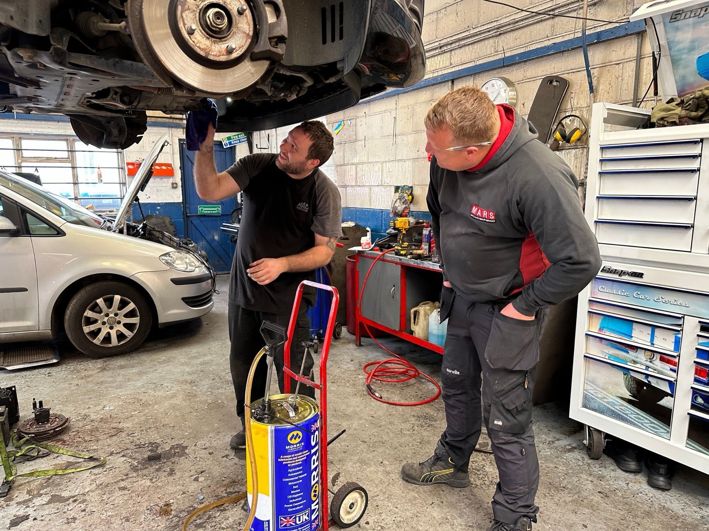
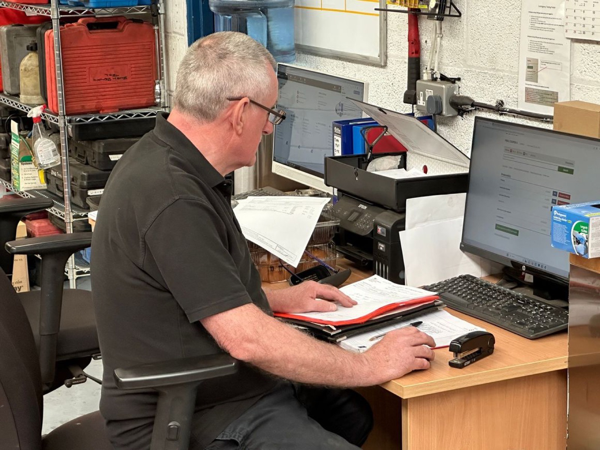
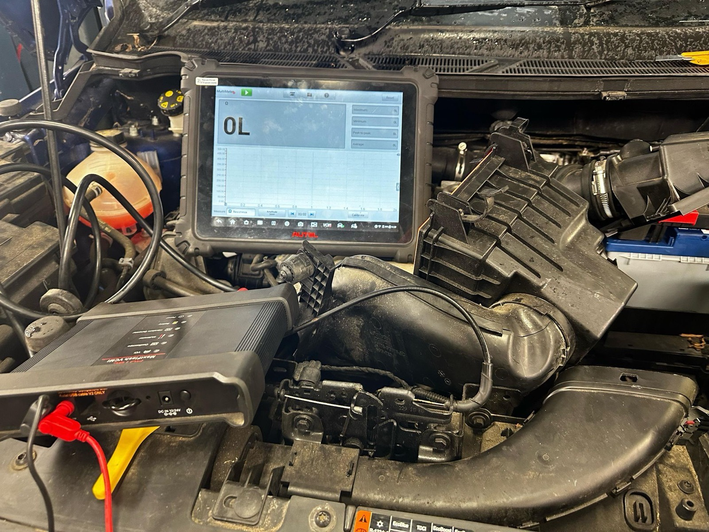
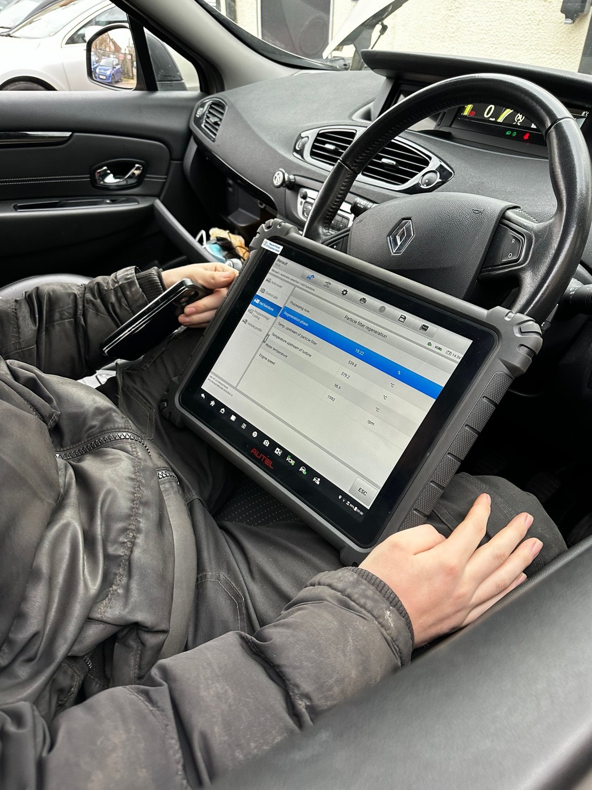
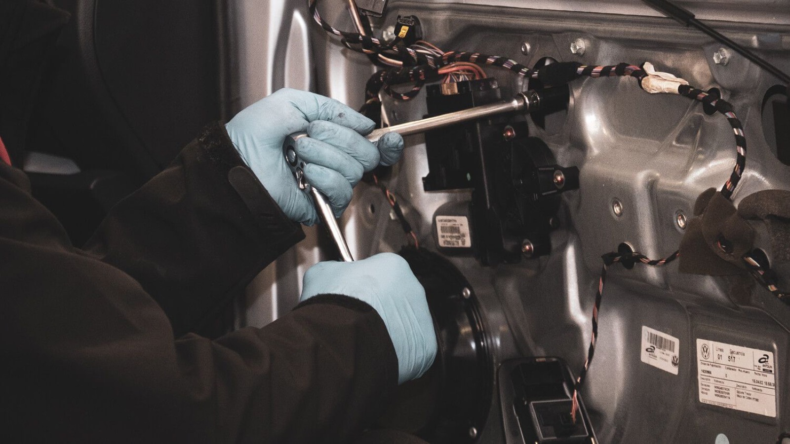
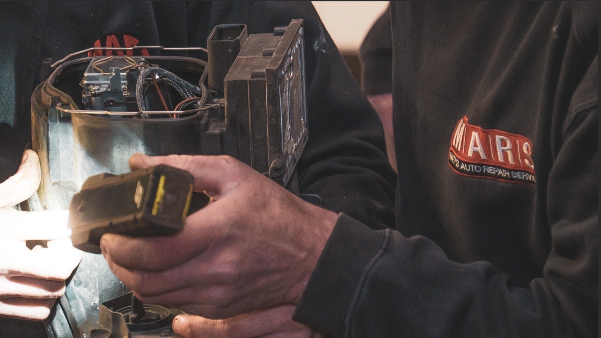
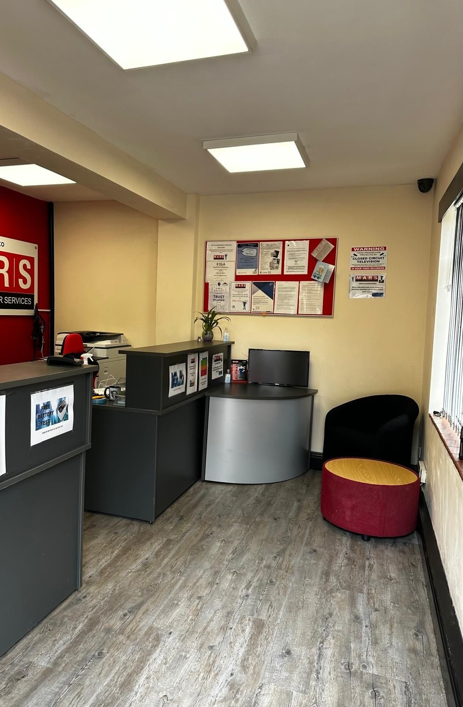
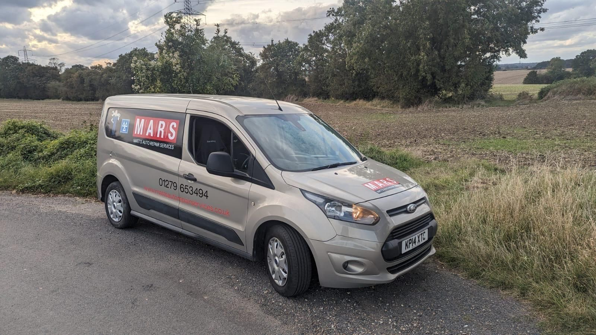

About Us
A family-run independent garage situated in the heart of Bishops Stortford, driven by a strong passion for quality service.
A staple of the community
Matts Auto Repair Services is a family-run independent garage situated in the heart of Bishops Stortford, driven by a strong passion for quality service.
Our premises on Bryan Road CM23 2HR have been a staple of the community for the past ten years, building a sterling reputation based on word-of-mouth referrals and loyal customers.


Treated as if it were our very own
Our team of four highly skilled technicians possesses over 95 years of combined experience in the motor trade, including those who have attained the prestigious master technician level with Ford and Peugeot, spanning across multiple well-known brands.
We pride ourselves on being an approved MOT station by the DVSA, making use of cutting-edge testing technology to ensure thorough on-site inspections without the need for external testing. Every vehicle that comes through our doors is treated with the utmost care and respect, as if it were our very own.
Our many glowing 5-star customer reviews on numerous platforms serve as a testament to our unwavering commitment to excellence.

Bryan Road, CM23





